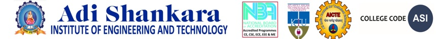

Edge-computing voice assistant enabling interaction with digital services using natural voice commands in regional Indian languages, powered by agentic AI workflows.
Voice is the most natural interface for technology interaction, especially for users with limited literacy. A local-language, privacy-preserving, offline-capable voice assistant can bridge the digital divide for millions.
Build a voice assistant that runs entirely on edge hardware, supports Malayalam as primary language with 10+ Indian languages, uses open-source AI models, and requires minimal internet.
Design and develop a hyper-localized multilingual voice assistant that enables seamless human-computer interaction using natural voice commands in regional Indian languages, with edge-computing capabilities and agentic AI workflows.
Achieve >85% accuracy for Malayalam ASR using state-of-the-art models
Enable seamless Malayalam ↔ English translation with >90% accuracy using IndicTrans2
Implement LangGraph-based intelligent agent routing for task execution, Q&A, and conversational AI
Optimize models for resource-constrained devices with <3 second end-to-end latency
Process all voice data locally — no audio leaves the device
| System / Paper | Year | Approach | Indian Languages | Edge / Offline | Limitation |
|---|---|---|---|---|---|
| Google Assistant | 2016 | Cloud-based NLU + ASR | Hindi only (limited) | No | Cloud-dependent; no Malayalam support; privacy concerns |
| Amazon Alexa | 2014 | Cloud ASR + Skills API | Hindi only | No | Proprietary; requires constant internet; limited Indic |
| Rasa Open Source | 2020 | Local NLU + dialogue manager | None built-in | Partial | No built-in ASR/TTS; no Indian language models |
| AI4Bharat IndicTrans2 | 2023 | Transformer-based translation | 22 languages | Yes | Translation only — no voice pipeline or agents |
| Whisper (OpenAI) | 2023 | Multilingual ASR | 99 languages | Yes | Generic — lower accuracy for low-resource languages |
| Bhashini (Govt.) | 2022 | API gateway for Indic AI | 11 languages | No | Cloud API only; no offline or edge support; no agents |
| Our System | 2026 | Edge LLM + LangGraph agents | 11 languages | Yes (full) | Addresses all above gaps |
Pingala V1 (2.94% WER) + Whisper fallback
IndicTrans2-Dist (211M params, ~93% accuracy)
Qwen3 (0.6B–4B) via llama.cpp GGUF
MMS-TTS (offline) + Cartesia (online, HQ)
LangGraph stateful graph with 4 agents
Layer 1 — Perception
Layer 2 — Cognition
Layer 3 — Expression
Converts user's voice to machine-readable text. Pingala V1 achieves 2.94% WER for Malayalam (50% better than Whisper). IndicTrans2-Dist translates to English for LLM processing.
The brain of the system. LangGraph classifies intent and routes to specialized agents. Each agent has domain-specific prompts and tools. Qwen3 LLM generates context-aware responses.
Converts the response back to the user's language and synthesizes natural-sounding speech. MMS-TTS supports all target languages offline.
Sprint Cycle (2 weeks)
Data Stores: D1: Conversations DB · D2: System Metrics · D3: Cache Store
Relationships: Conversation 1:N Message (FK: conversation_id). SystemMetric is independent.
| Layer | Technology | Purpose |
|---|---|---|
| Language | Python 3.10+ | Primary development language |
| ASR | Pingala V1, Whisper | Speech-to-text (2.94% WER) |
| Translation | IndicTrans2-Dist | ML ↔ EN (211M params) |
| LLM | Qwen3 + llama.cpp | Response generation (GGUF) |
| TTS | MMS-TTS, Cartesia | Text-to-speech synthesis |
| Agents | LangGraph | Stateful agentic workflows |
| API | FastAPI + Uvicorn | REST + WebSocket server |
| Frontend | React + TypeScript | Dashboard (Vite + Tailwind) |
| Database | SQLite | Conversation logging |
| Inference | ONNX Runtime | Optimized model inference |
| ML | PyTorch, Transformers | Model loading & inference |
IDE: VS Code + Claude Code
VCS: Git + GitHub
Testing: pytest
Formatting: Black + Ruff
Deployment: Docker
Research, Setup, ASR & TTS PoCs
21 / 21 ptsTranslation, LLM, Memory, Qwen3 + llama.cpp
21 / 21 ptsPipeline, API, Pingala ASR, ONNX, WebSocket
21 / 21 ptsLangGraph Agents, Dashboard, DB, Tests
18 / 18 ptsEdge Optimization, Caching, Docker, Benchmarks
18 pts — activeTesting, Documentation, Demo, Polish
15 pts — planned| Sprint | Duration | Key Deliverables | Points | Status |
|---|---|---|---|---|
| Sprint 1 | Week 1–2 | Whisper ASR, MMS-TTS, Cartesia TTS, architecture, dev environment | 21 | 100% |
| Sprint 2 | Week 3–4 | IndicTrans2-Dist, Qwen3 + llama.cpp, Indic-to-Indic translation, memory | 21 | 100% |
| Sprint 3 | Week 5–6 | Pingala V1 (2.94% WER), Pipecat pipeline, FastAPI, WebSocket, ONNX | 21 | 100% |
| Sprint 4 | Week 7–8 | LangGraph orchestrator, ClawGo agent, SQLite DB, React dashboard, pytest | 18 | 100% |
| Sprint 5 | Week 9–10 | Response caching, model optimization, Docker, benchmarking suite | 18 | In Progress |
| Sprint 6 | Week 11–12 | Unit/integration tests, documentation, demo presentation | 15 | Planned |
| Endpoint | Method |
|---|---|
/health | GET |
/api/transcribe | POST |
/api/process | POST |
/api/tts | POST |
/api/text | POST |
/api/dashboard/stats | GET |
/ws/stream | WebSocket |
ASR: Pingala V1 (2.94% WER), Whisper, MMS, Indic Whisper — 4 engines with automatic fallback
Translation: IndicTrans2-Dist bidirectional (11 languages), Indic-to-Indic direct, ~93% accuracy
LLM: Qwen 2.5 + Qwen3 with llama.cpp and transformers backends, conversation memory
TTS: MMS-TTS (offline), Cartesia (HQ), Indic Parler (69 voices), Chatterbox
Agents: LangGraph + ClawGo orchestration, AgentFactory, 4 specialized agents
Running ASR + Translation + LLM + TTS simultaneously requires 10–16 GB RAM. Solved with lazy loading (models load on demand) and IndicTrans2-Dist (5x smaller).
Pipecat framework uses async callbacks while ML models are synchronous. Required refactoring all component wrappers to support async/await patterns with thread pool executors.
Voice-style Malayalam differs from written text. ASR outputs colloquial forms that translation models struggle with. Required preprocessing and normalization of ASR output.
Original Sprint 5 planned Pi 5 deployment. Pivoted to Docker-based edge simulation with resource limits (2 CPU, 4GB RAM), model quantization, and response caching — proving edge-readiness without physical hardware.
Qwen3's thinking mode outputs <think> tags in responses. Required post-processing to strip internal reasoning and return only voice-appropriate text to users.
Physical edge deployment when hardware becomes available
Custom "Hey Assistant" trigger word for hands-free activation
MQTT-based IoT device control via voice commands
React Native app for remote interaction with the assistant
Local document retrieval for domain-specific Q&A
Enables non-English speakers to access digital services naturally
All processing happens locally — voice data never leaves the device
Open-source models mean no API fees or subscription costs
Fully open-source pipeline, replicable for other low-resource languages
End-to-end ASR → Translation → LLM → Agents → TTS pipeline with <3s latency, supporting Malayalam and 10 other Indian languages.
2.94% WER for ASR (Pingala V1), ~93% translation accuracy (IndicTrans2-Dist), natural responses (Qwen3).
LangGraph orchestrator with specialized agents for information queries, task execution, and conversation.
99 of 114 story points delivered across 5 sprints. Sprint 6 (testing & documentation) remaining.
[1] Gala, J. et al. “IndicTrans2: Towards High-Quality and Accessible Machine Translation Models for all 22 Scheduled Indian Languages.” TMLR, 2023.
[2] Radford, A. et al. “Robust Speech Recognition via Large-Scale Weak Supervision.” (Whisper) ICML, 2023.
[3] Pratap, V. et al. “Scaling Speech Technology to 1,000+ Languages.” (MMS) Meta AI, 2023.
[4] Bai, J. et al. “Qwen2.5 Technical Report.” Alibaba Group, 2024.
[5] Yang, A. et al. “Qwen3 Technical Report.” Alibaba Group, 2025.
[6] Vaswani, A. et al. “Attention is All You Need.” NeurIPS, 2017.
[7] LangGraph: Multi-agent AI framework. LangChain, 2024.
[8] Pipecat: Open-source voice and multimodal pipeline. Daily.co, 2024.
[9] llama.cpp: Port of LLaMA model in C/C++. Gerganov, G., 2023.
[10] ONNX Runtime: Cross-platform ML inference. Microsoft, 2019.
[11] FastAPI: Modern Python web framework. Ramirez, S., 2019.
[12] AI4Bharat. “IndicNLP Suite: NLP Resources for Indian Languages.” 2020.
[13] Pingala. “Pingala V1: Indic Speech Recognition.” Sarvam AI, 2024.
[14] Bhashini: India's AI-led Language Translation Platform. MeitY, Govt. of India, 2022.
[15] Kakwani, D. et al. “IndicNLPSuite: Monolingual Corpora, Evaluation Benchmarks and Pre-trained Models for Indian Languages.” EMNLP Findings, 2020.
[16] Jacob, B. et al. “Quantization and Training of Neural Networks for Efficient Integer-Arithmetic-Only Inference.” CVPR, 2018.
[17] Dettmers, T. et al. “GPTQ: Accurate Post-Training Quantization.” ICLR, 2023.
[18] Han, S. et al. “Deep Compression.” ICLR, 2016.
[19] Census of India: Languages and Mother Tongues. censusindia.gov.in
[20] HuggingFace Model Hub. huggingface.co